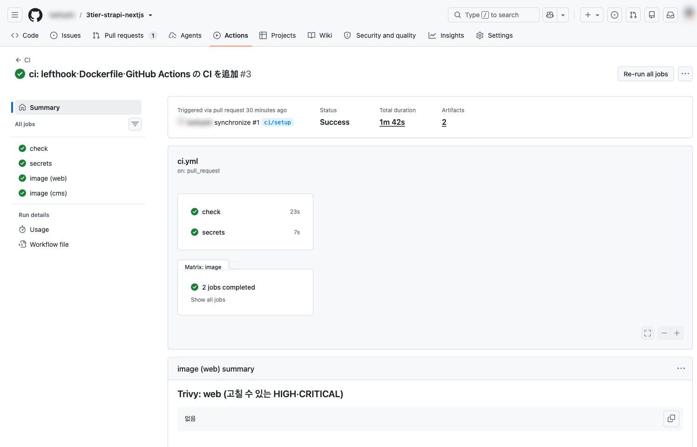
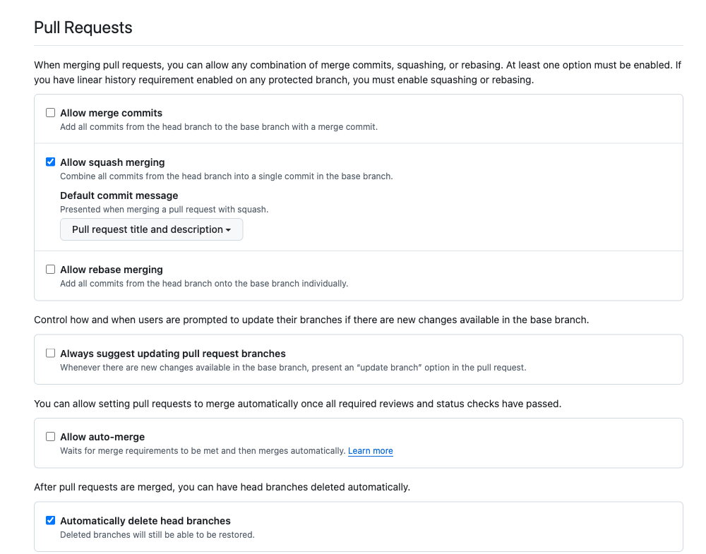
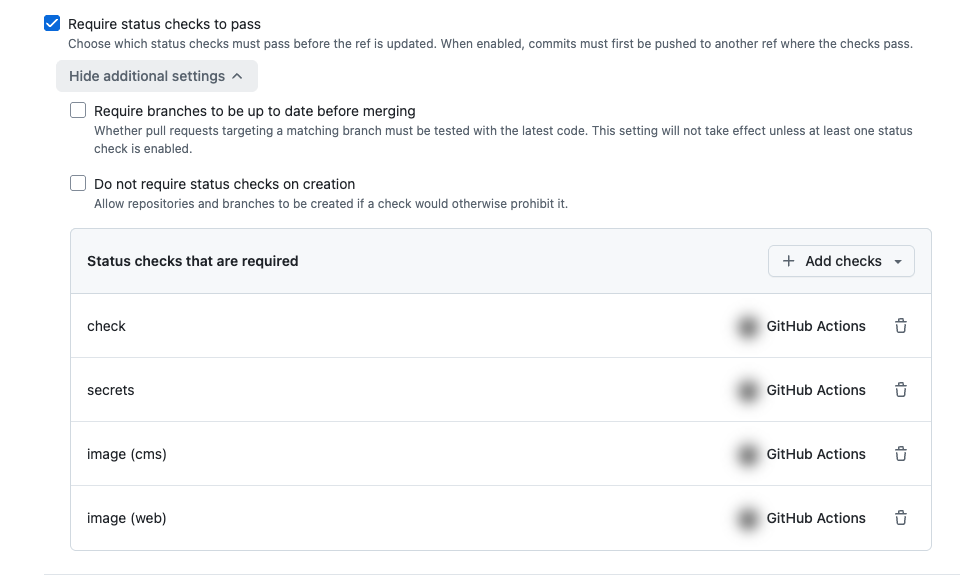
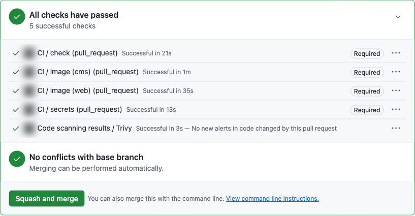

GitHub와 CI: 검사를 통과한 코드만 main에 들어가게 하기
코드를 바꿀 때마다 기계가 자동으로 검사(CI)하고, 통과한 코드만 main에 합쳐지게 만듭니다. 06장의 자동 배포는 이 main을 기준으로 움직이므로, 여기서 막은 문제는 운영에 가지 않습니다. 이 장은 흐름과 핵심을 설명하고, 자세한 설정은 저장소의 실제 파일을 안내합니다.
PR을 만들면 CI가 자동으로 돌고, 모두 통과해야만 main에 머지할 수 있는 저장소를 만든다.
1. CI란
CI(Continuous Integration, 지속적 통합)는 여러 사람의 변경을 main에 합치기 전에, 정해진 검사를 사람이 아니라 기계가 매번 같은 방식으로 돌리는 것입니다. 사람이 "검사했겠지"라고 믿는 대신, 검사를 통과한 것만 합칩니다. 그러면 main은 언제나 "검사를 통과한 상태"로 유지되고, 06장에서는 이 main을 그대로 배포할 수 있습니다.
이 장에서는 어떤 프로젝트에나 필요한 기본 검사만 합니다.
| 이 장에서 하는 것 | 하지 않는 것 (프로젝트에 맞게 추가) |
|---|---|
| 코드 모양·흔한 실수 검사, 타입 검사, 시크릿 검사, 운영용 이미지 빌드, 이미지 취약점 검사 | 자동 테스트(단위·화면 조작 테스트), 성능 측정, PR마다 미리보기 환경 배포 등. 이 예시 사이트는 읽기만 하는 단순한 화면이라 넣지 않았습니다 |
2. 전체 흐름
작업은 main이 아니라 브랜치(작업용 사본)에서 하고, PR(Pull Request, "이 변경을 main에 합쳐 달라"는 신청서)로 합칩니다. 문제 있는 코드는 세 곳에서 막습니다.
앞쪽일수록 빨리 알려 주고, 뒤쪽일수록 건너뛸 수 없습니다. 같은 검사를 여러 곳에 두는 이유입니다.
3. 커밋 직전 검사: lefthook
git에는 git commit 직전에 스크립트를 실행하고, 실패하면 커밋을 멈추는 hook이 있습니다. 그런데 hook 파일은 공유되지 않는 .git/ 안에 있습니다. lefthook은 규칙을 저장소의 lefthook.yml에 적어 두고, pnpm install 때 각자의 PC에 hook을 설치해 줍니다. 그래서 팀 전원이 같은 검사를 거칩니다.
이 저장소에서는 커밋할 때 두 가지를 검사합니다.
pre-commit:
parallel: true
jobs:
# 코드 모양 자동 수정 + 실수 검출. 고친 파일은 자동으로 다시 스테이징한다
- name: biome
glob: "*.{js,ts,cjs,mjs,jsx,tsx,json,jsonc,css}"
run: pnpm exec biome check --write --no-errors-on-unmatched --files-ignore-unknown=true {staged_files}
stage_fixed: true
# 비밀번호·토큰 같은 시크릿이 커밋에 들어가지 않았는지 검사 (Docker 로 실행하므로 따로 설치할 필요 없음)
- name: gitleaks
run: docker run --rm -v "$PWD:/repo" ghcr.io/gitleaks/gitleaks:v8.30.1 git --pre-commit --staged --redact --verbose /repo| 검사 | 하는 일 |
|---|---|
| biome | 커밋할 파일의 코드 모양을 자동으로 고치고, 흔한 실수를 찾습니다 |
| gitleaks | 비밀번호·토큰처럼 보이는 문자열이 있으면 커밋 자체를 막습니다. 히스토리에 남기 전에 막는 것이 핵심입니다 |
시크릿처럼 보이는 문자열을 커밋하려 하면 이렇게 막힙니다.
🥊 gitleaks
WRN leaks found: 1
Finding: const key = "REDACTED"
File: leak-test.ts전체: lefthook.yml / lefthook은 설치 때 hook을 등록해야 하므로 pnpm-workspace.yaml의 allowBuilds에서 lefthook: true로 허용합니다.
git commit --no-verify로 건너뛸 수 있고, 설치하지 않은 사람에게는 동작하지 않습니다. 그래서 같은 검사를 CI에서 한 번 더 합니다. hook은 빠른 알림, CI는 강제입니다.4. CI: GitHub Actions
.github/workflows/에 YAML 파일을 두면, GitHub이 PR을 만들 때마다 러너(GitHub이 준비하는 가상 머신)에서 그 내용을 실행합니다. 러너는 매번 새로 만들어지고 끝나면 버려지므로 "내 PC에서는 되는데"가 통하지 않습니다.
이 저장소의 CI는 검사 4개를 동시에 돌립니다(image는 web·cms로 두 번 실행).
| 검사 이름 | 하는 일 | 막아 주는 것 |
|---|---|---|
check | 코드 검사(Biome), 타입 검사 | 오타·실수, 내 PC에서만 되는 코드 |
secrets | gitleaks로 모든 커밋을 검사 | 과거 커밋에 섞인 시크릿(파일에서 지워도 히스토리에 남음) |
image (web) / image (cms) | 운영과 같은 Docker 이미지를 빌드하고, Trivy로 취약점 검사 | 깨진 빌드, 이미지 안의 알려진 취약점 |
검사 하나(job)는 이런 모양입니다.
# 코드 모양·실수(Biome)와 타입 검사
check:
# 러너 OS 는 버전을 고정한다 (ubuntu-latest 는 2026-10-19 부터 Ubuntu 26 으로 바뀜. 올릴 때는 사람이 정한다)
runs-on: ubuntu-24.04
timeout-minutes: 10
steps:
- uses: actions/checkout@3d3c42e5aac5ba805825da76410c181273ba90b1 # v7.0.1
with:
persist-credentials: false
# package.json 의 pnpm 버전, .nvmrc 의 Node 버전을 읽어 설치하고 pnpm install 까지 한다
- uses: pnpm/setup@fbda4c85fc2e1e08721cd8763afea8f48d60f024 # v3.0.0
with:
cache: true
require-lockfile: true
- run: pnpm exec biome ci
- run: pnpm typecheckuses:는 다른 사람이 만든 액션(재사용 가능한 단계)을 가져와 쓰는 것이고, run:은 명령을 직접 실행하는 것입니다. 전체: .github/workflows/ci.yml
지키고 있는 두 가지 원칙
| 원칙 | 이 저장소에서 | 왜 |
|---|---|---|
| 액션은 커밋 SHA로 고정 | actions/checkout@3d3c42e5… # v7.0.1 | @v7 같은 태그는 다른 코드로 바꿔칠 수 있습니다. 2026년 3월 실제로 유명 액션의 태그가 악성 코드로 바뀌어 많은 CI에서 시크릿이 유출됐습니다. SHA는 내용이 바뀌면 값도 바뀝니다 |
| 최소 권한 | permissions: contents: read | CI에 자동으로 주어지는 토큰을 "읽기만"으로 제한합니다. 액션이 악성이어도 저장소를 고칠 수 없습니다 |
5. 이미지 빌드와 취약점 검사
06장에서는 web과 cms를 Docker 이미지(앱과 실행에 필요한 것을 묶은 상자)로 AWS에서 실행합니다. CI는 PR마다 그 이미지를 똑같이 빌드해 보고, 안에 든 부품에 알려진 취약점이 없는지 Trivy로 검사합니다.
Dockerfile에서 중요한 점은 네 가지입니다. 전체: apps/web/Dockerfile, apps/cms/Dockerfile
- 2단계로 만든다: 1단계에서 설치·빌드하고, 2단계에는 실행에 필요한 결과물만 옮깁니다. 빌드 도구와 소스는 운영 이미지에 들어가지 않습니다.
- 실행에 필요 없는 것은 넣지 않는다: npm, 관리자 화면 빌드 도구(vite) 등. 없는 것은 공격에 쓰일 수도, 취약점으로 잡힐 수도 없습니다.
- root가 아닌 사용자로 실행: 컨테이너가 뚫려도 피해가 작습니다.
- 시크릿은 이미지에 넣지 않는다: 실행할 때 환경변수로 넣습니다(06장).
.dockerignore로.env가 들어가는 것도 막습니다.
결과 보기
PR의 검사 이름을 누르면 실행 화면의 Summary에 Trivy 결과 표가 나옵니다.

취약점이 잡혔을 때
이미지에는 직접 고르지 않은 패키지가 수천 개 들어 있고, 새 취약점은 매일 공개됩니다. 같은 코드라도 날짜에 따라 결과가 달라집니다. 이 자료를 만들 때도 처음에는 web 4건, cms 32건이 잡혔습니다. 대응은 이 순서로 판단합니다.
| 순서 | 이 자료에서 한 일 |
|---|---|
| ① 고친 버전이 있으면 올린다 | Strapi가 고정해 둔 패키지 2개를 수정판으로 지정(pnpm-workspace.yaml의 overrides) |
| ② 실행에 쓰지 않으면 뺀다 | npm과 빌드 도구를 운영 이미지에서 제외 |
| ③ 둘 다 안 되면 이유와 기한을 적고 예외로 둔다 | (이번에는 필요 없었음) |
Security 탭의 Code scanning은 무엇인가요?
CI는 Trivy 결과를 SARIF(검사 결과의 표준 형식)로 GitHub에 올립니다. Code scanning은 검사기가 아니라, 이렇게 올라온 결과를 경고 목록으로 보관하고 "언제 생겼고 언제 고쳐졌는지"를 추적하는 GitHub의 기능입니다. 다음 검사에서 사라진 경고는 자동으로 "fixed"로 닫힙니다.
업로드하면 PR에 Code scanning results / Trivy 체크가 자동으로 붙습니다. 다시 검사하는 것이 아니라, "이 PR이 새 경고를 만들었나"를 main과 비교하는 것입니다. Security 탭의 기본 목록은 main 브랜치 기준입니다.
6. 저장소 설정
CI만으로는 ✗여도 머지 버튼을 누를 수 있습니다. 저장소 설정 두 가지로 "통과해야만 합칠 수 있게" 만듭니다. 저장소를 만든 뒤, CI가 한 번 돈 다음에 설정합니다.
머지 방식: squash만
Settings → General → Pull Requests

squash는 PR 안의 커밋 여러 개("수정", "오타 수정" 등)를 main에 커밋 1개로 합쳐 넣는 방식입니다. PR 제목이 그대로 main의 커밋 메시지가 되어, main의 기록이 "변경 단위"로 깔끔하게 남습니다.
Ruleset: main 보호
Settings → Rules → Rulesets → New branch ruleset에서 main(Default branch)을 대상으로 만듭니다.
| 규칙 | 효과 |
|---|---|
| Require a pull request before merging | main에 직접 push 금지. 반드시 PR을 거칩니다(혼자 쓰는 저장소면 승인 인원 0) |
| Require status checks to pass | 지정한 CI 검사가 ✓가 아니면 머지 불가. 4절의 4개를 추가합니다 |
| Block force pushes / Restrict deletions | main의 히스토리 덮어쓰기와 삭제 금지 |

Secret scanning과 Push protection(2절 그림의 ②)은 public 저장소에서 기본으로 켜져 있습니다. Settings → Advanced Security에서 확인할 수 있습니다.
ci.yml의 결과 업로드 단계만 빼면 되고, 머지를 막는 기능은 그대로 동작합니다.7. 결과: PR 화면

머지하면 main에 커밋 1개가 생깁니다. 이 장의 커밋은 PR 제목 그대로입니다.
ci: lefthook・Dockerfile・GitHub Actions の CI を追加 (#1)앞으로의 변경은 모두 같은 흐름입니다: 브랜치 → 커밋(lefthook) → push → PR(CI) → squash 머지.
다음: CI에서 CD로
CI는 "합치기 전"의 검사였습니다. CD(Continuous Delivery/Deployment, 지속적 배포)는 그 다음, "합쳐진 뒤"에 main을 자동으로 운영 환경에 내보내는 것입니다.
PR ──(CI: 검사)──▶ squash 머지 ──▶ main 이 바뀜 ──(CD: 06장)──▶ AWS 운영 환경main은 이 장의 설정으로 "검사를 통과한 코드만 있는 곳"이 되었습니다. 그래서 06장에서는 main에 머지되는 순간 배포 워크플로가 이어서 돌고, 사람이 승인하면 AWS에 반영되도록 만듭니다.